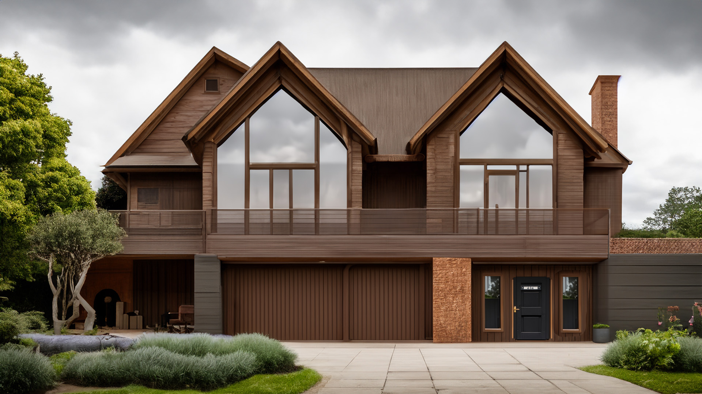

Learn more about 404 Allendale Blvd:
Welcome to 404 Allendale Blvd, a stunning three-story home with eleven rooms designed for comfort and convenience. This modern home features advanced smart technology by Intellidwell, allowing you to control lighting, climate, and security easily through your phone or voice commands.
Enjoy a state-of-the-art kitchen with smart appliances, spacious living areas perfect for entertaining, and high-end finishes throughout. For your peace of mind, the home includes a top-notch security system with smart locks, cameras, and alarms that you can monitor remotely.
This home also offers energy-efficient solutions and health-focused amenities, making it a safe, stylish, and practical choice. Schedule a visit today to see how this smart home can fit your lifestyle!
Base Floor 1:
This average-sized garage comfortably fits up to two cars, providing ample space for your vehicles or additional storage needs. The floors are sturdy cement, and the white walls create a clean, bright environment. A window allows for ventilation, keeping the space fresh and airy. You can customize it with preferred furniture or use it for storing items for later use.
STORAGE UNITS ARE NOT INCLUDED.
The backyard patio is a versatile space designed for both relaxation and entertainment. It features fold-out tables that automatically prepare and serve food for guests, ensuring a seamless dining experience. For added fun, an automated card dealer offers a small hand of cards for impromptu games. This innovative patio transforms outdoor gatherings into effortless and enjoyable events.
Sub-Level:
The cellar offers a practical and spacious area for various storage needs. It features an efficient incinerator for disposing of waste and keeping the space clutter-free. The cool, dry environment is ideal for storing items that require a controlled climate. With its functional design, this cellar is both convenient and versatile. Alternatively, it can also be used to manage the electricity of the house.
Floor 2:
The bedroom is a cozy, moderately sized room, and is conveniently located right next to the Nursery, making it ideal for parents. It features automatic bed heating to ensure a warm and comfortable night's sleep. The room is designed with a focus on relaxation and ease of use.
The nursery is designed with both comfort and imagination in mind. The room features automatic bed heating to keep your little one cozy throughout the night. A built-in music system creates a soothing atmosphere, while holographic animals on the walls add a touch of futuristic fun. The playful aura makes it a perfect, serene space for a child to grow and play.
The bathroom features luxurious automated baths that allow for a customized and relaxing experience. The sleek design includes easy-to-use controls for adjusting temperature and water levels to your preference. High-quality fixtures and finishes enhance the room's elegance and functionality. This bathroom combines comfort and convenience, making it a perfect retreat for unwinding.
Floor 3:
The study is a sophisticated space designed for both focus and relaxation. It features an automated reading bot that can read books or poems out loud, providing a delightful literary experience. Additionally, an automated cigar stand offers a touch of luxury and convenience for cigar enthusiasts. With its elegant furnishings and thoughtful details, this study is the perfect retreat for both work and leisure.
The living room is a spacious and inviting area, perfect for both relaxation and entertaining. It features comfortable seating and stylish décor that creates a warm, welcoming atmosphere. Large windows let in plenty of natural light, enhancing the room’s bright and airy feel. With its modern amenities and thoughtful design, this living room is an ideal space for making lasting memories.
The kitchen is a contemporary and functional space designed for both cooking and gathering. It features state-of-the-art appliances with automated cooking functions, making meal preparation effortless. Modern cabinetry and sleek finishes add a touch of elegance, while a metal wedge helps efficiently dispose of leftovers. With its open layout and thoughtful design, the kitchen is both stylish and practical, perfect for culinary adventures and casual dining.
The parlor is a charming and sophisticated space designed for relaxation and socializing. It features elegant furnishings and a warm ambiance that makes it perfect for entertaining guests or unwinding after a long day. Conveniently, the room is equipped with cleaning mice that can access any part of the house, ensuring the parlor—and the entire home—remains spotless with minimal effort.
Other:
The attic is a small space that contains the brain of the house. Emergency items such as robotic snakes are kept up there in case of a fire. In addition, the water resevoir is also there.